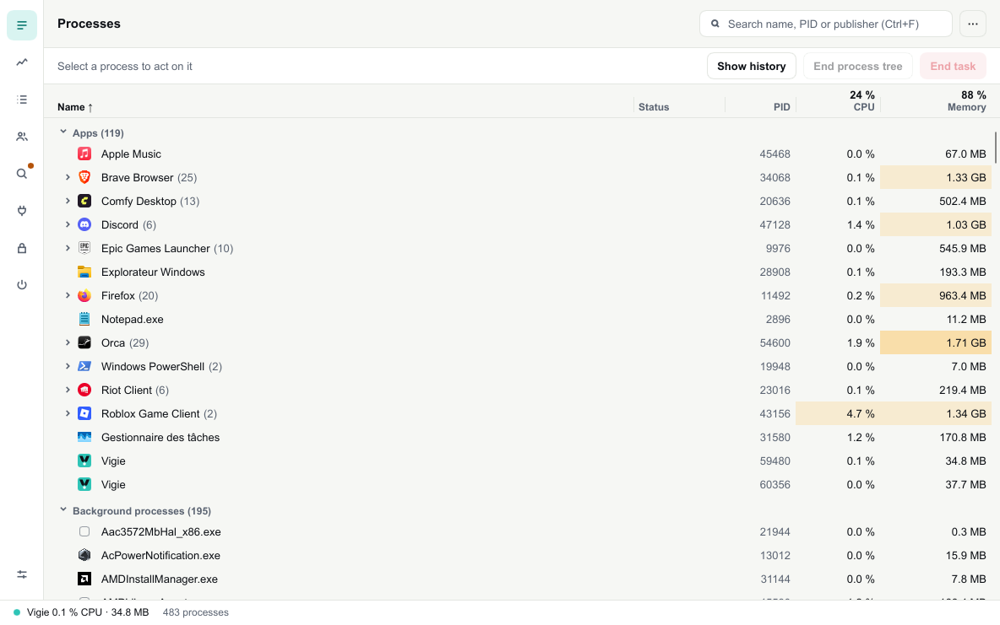
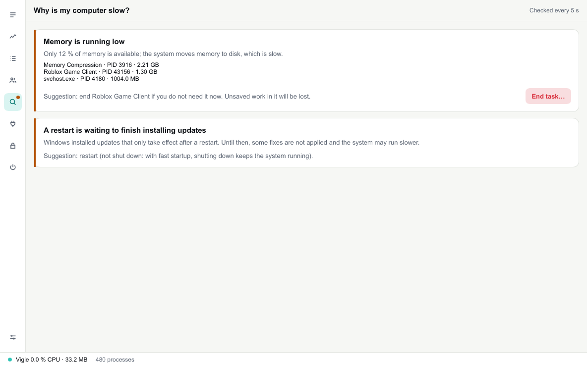
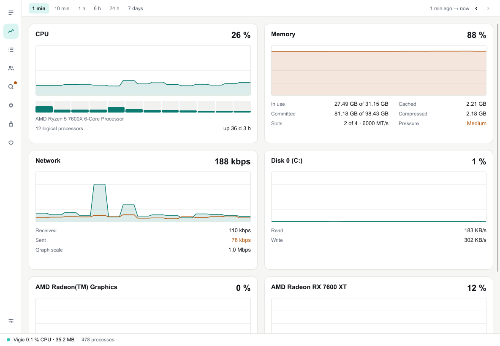
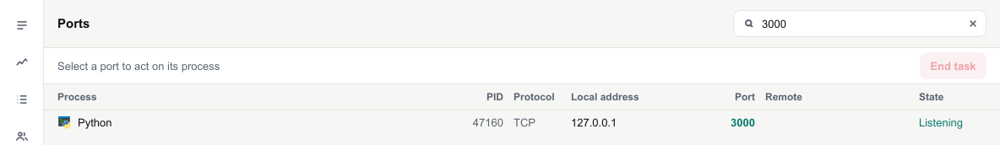
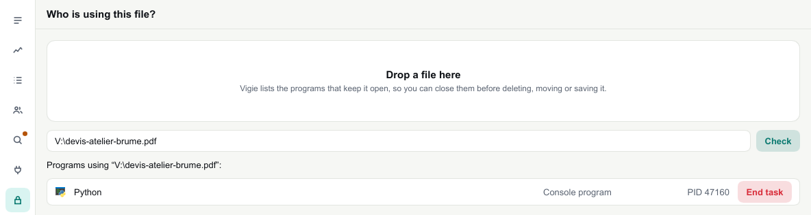
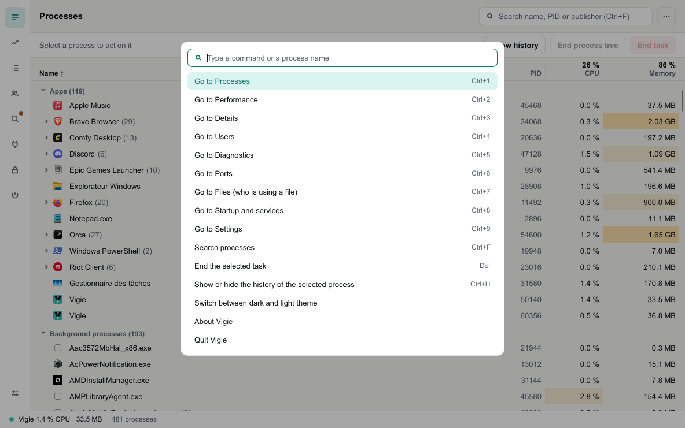

See everything.
Weigh nothing
Vigie is a free task manager. It shows what runs on your PC, what slows it down and who holds your ports and files, while staying out of the way.
Windows 10 and 11 · free · MIT licence

Vigie 0.3% CPU · 9.2 MB Vigie's status bar shows its own cost at all times. Typical figures on a desktop PC running 430 processes.
Its own cost is part of the spec
Measured for every version with cargo xtask bench-overhead: one minute of running, CPU time and memory read from the system. A change that breaks the budget does not get in. When its window goes to the background, Vigie slows down by itself; minimised, it looks only once every ten seconds.
Why is my PC slow?
Vigie asks for you, every five seconds.
A saturated processor, memory running out, a program growing for an hour, a disk at its limit: every finding comes with its figures and one suggestion. If you like, a notification tells you, at most once every fifteen minutes.

Scroll back in time.
Processor, memory, network, disks and graphics cards, from the last minute to the last seven days.
Hover a graph to read a value and its time, drag it to go back. Short spikes stay visible on long ranges. Every process you select gets its own history too.

Who holds port 3000? Who locks this file?
Type a port number: Vigie finds the process listening on it. Drop a file Windows refuses to delete: it lists the programs keeping it open. Either way, "End task" asks first and names what will stop.


Ctrl+K, and the rest follows.
A command palette, a shortcut for every view, a right-click menu everywhere, lists you move through with the arrow keys.
Startup apps, services, settings: everything is two keys away. And if you want, Ctrl+Shift+Esc opens Vigie instead of Task Manager, reversible at any time.

What Task Manager does not tell you
Compared with Windows 11 Task Manager. Its usual views are there too (Processes, Details, Users, Startup, Services), with the same right-click entries. It stays the system's tool: Vigie replaces it only if you ask.
Questions
Is it free?
Yes, with nothing in return. Vigie is open source under the MIT licence, written in Rust.
What leaves my computer?
Nothing. Vigie makes no network request: no account, no telemetry, no silent update. Its settings stay in a text file on your PC.
Does it need administrator rights?
No. Vigie installs for your account only. Only stopping a system service and replacing Task Manager ask for an administrator confirmation, when you do them.
Why does Windows show a warning?
This first version is not signed yet, so Windows SmartScreen warns on the first launch: "More info", then "Run anyway".
What about Mac and Linux?
Vigie already builds there and shows processes. Performance, diagnostics, ports and the rest come next: everything is built on Windows first.
How do I uninstall it?
From Settings, Apps, like any program. If it replaced Task Manager, uninstalling gives Task Manager its place back first. Your settings stay in %APPDATA%\Vigie, just in case.
Keep an eye on it.
Windows 10 and 11, an installer that needs no administrator rights, or a portable version. English and French.